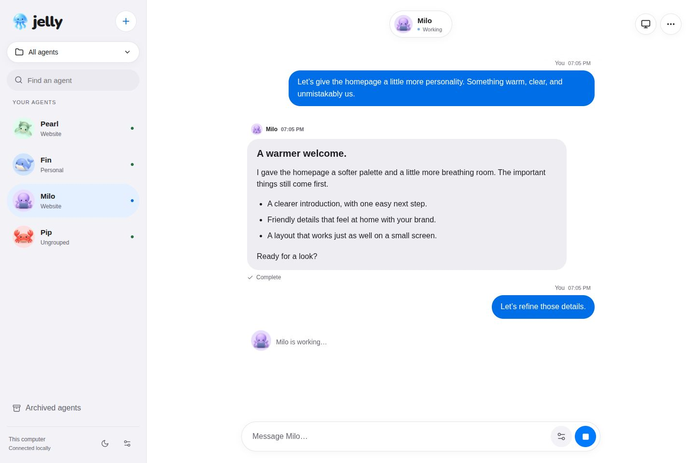
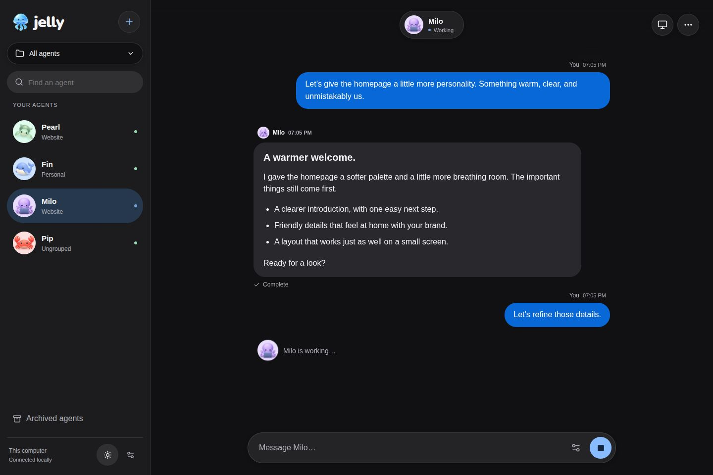
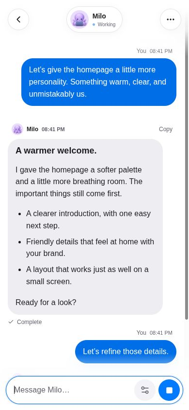
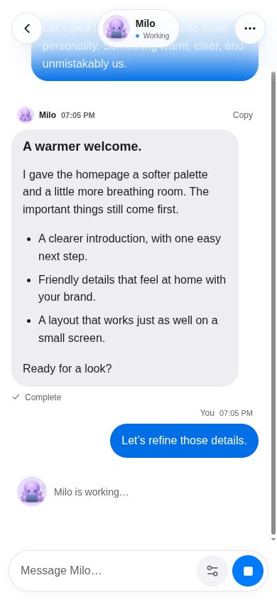
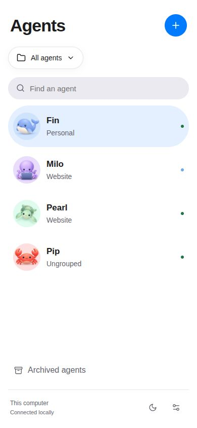
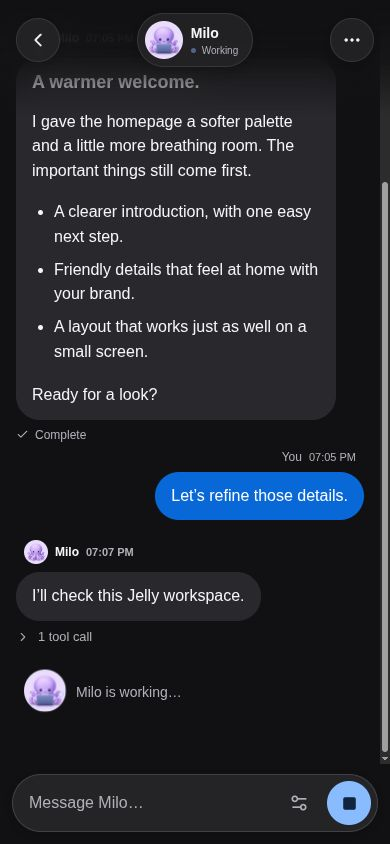
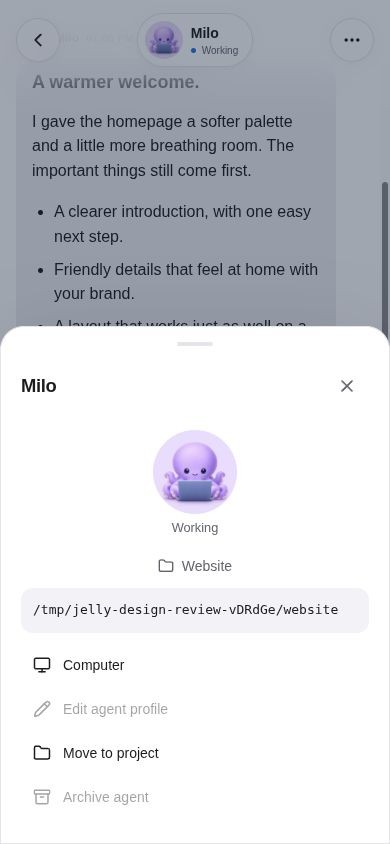
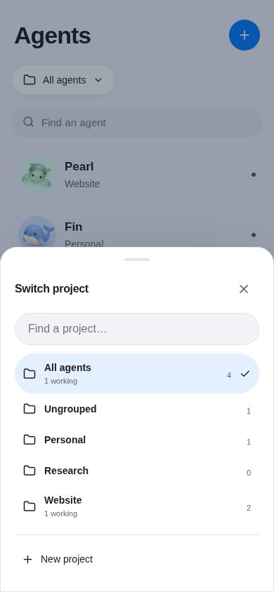

Porcelain, in Jelly.
Actual desktop and mobile screenshots of the updated app. Floating agent controls sit over a soft blur that fades completely into the background at the top edge. A matching bottom fade lets messages scroll behind the input. Project switching lives in the sidebar; each agent’s project appears in its details.
White and gray surfaces, blue actions, fully rounded controls, and the familiar sea creatures. Captured with a disposable demo workspace at 1440 × 960 and 390 × 844.







